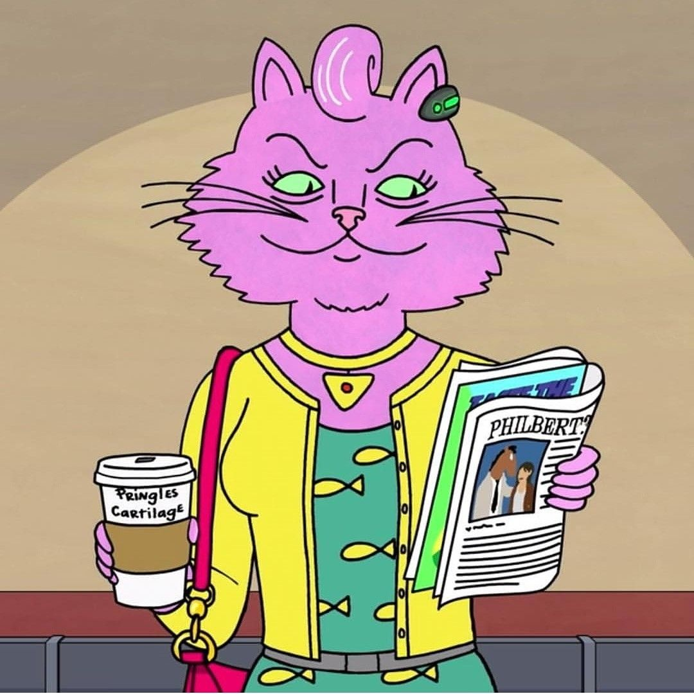

Princess Carolyn
Princess Carolyn es un personaje ficticio de la serie de animación BoJack Horseman. Es un gato antropomórfico y agente de talentos. Es la ex novia de BoJack Horseman. Es una mujer inteligente, trabajadora y con un gran sentido del humor.
Regresar